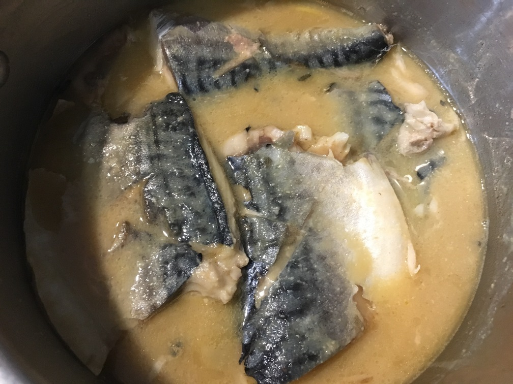

| Other | Meat | Veggie | Fruit |
|---|---|---|---|
| miso | mackerel fish | ginger | |
| sake | |||
| soy sauce | |||
| sugar |
| instructions |
|---|
| Cut 1 mackerel into 4 piece filets and cut cross incision on the skin |
| Bring to a boil 1 c water, 0.25 c miso, 0.25 c sugar, 0.25 c sake, ginger slices, stirring well |
| Add mackerel, skin side up, at medium heat |
| Simmer for 10 min |
| Stir in 0.5 tsp soy sauce |
| Eat with rice and sauce |